Cosa è?
L’acronimo sta per Advanced RISC Machine dal tipo di architettura ARM, prende il nome l’azienda che ne detiene le licenze 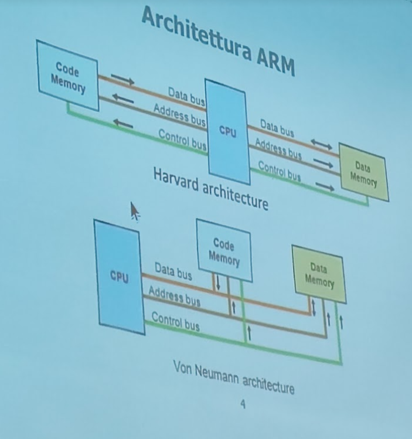
Varie versioni della architettura ARM
Quelle che vedremo di più sono le v7 e si dividono in 3 tipologie:
- Cortex-A: dispositivi ad elaborazione avanzata tipo per i telefoni
- Cortex-R: per applicazioni in tempo reale tipo roba per automobili
- Cortex-M: per processori a basso consumo e che siano veloci 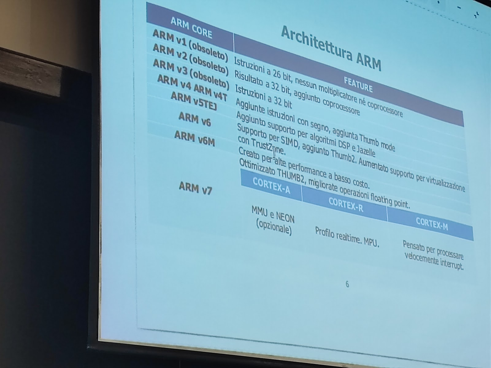
Instruction set ARM
L’instruction set è una serie di istruzioni che occupano determinati bit di lunghezza fissa e che esegue il processore di tipo ARM, l’architettura ARM ne prevede 3 :
- 32 bit istruzioni ARM: uso di istruzioni di tipo LOAD/STORE dove ogni istruzione può essere di tipo condizionale modificando lo stato di una flag
- 16 bit Thumb: è una versione compressa delle istruzioni ARM ma non ha tutte le sue funzionalità, ad esempio non è condizionale tranne la funzione Branch(salto) dove in base a una condizione avviene il salto da un indirizzo di memoria all’altro
- 8 bit Jazelle: permette l’esecuzione di bytecode Java sulla CPU senza convertirlo in istruzioni ARM
cosa è il bytecode
Il bytecode è un tipo di codice sorgente intermedio più astratto rispetto al codice macchina nativo eseguito direttamente da un processore. Mentre il codice macchina è specifico per un’architettura hardware particolare, il bytecode è progettato per essere eseguito su una macchina virtuale (VM) anziché direttamente su un hardware fisico.
cosa è il registro di stato?
il registro di stato è quella memoria che salva tutti gli stati delle flag(tipo 0 o 1) che vengono usati per svolgere problemi di tipo condizionale
Le sue caratteristiche
- Ogni istruzione può essere skippata o meno in base a delle condizioni che si verificano dalle flag(es: se due valori sono uguali, oppure un risultato di una operazione ha stato negativo)
- Architettura LOAD/STORE, ovvero una architettura che ha le operazioni di caricamento dalla memoria e di salvataggio sulla memoria separate.
- Non è possibile fare operazioni di shift elementari ma solo operazioni aritmetiche logiche che possono portare allo stesso risultato anche con solo una istruzione
- Non esiste la divisione matematica, deve farla un coprocessore
- Incremento o Decremento degli indirizzi di memoria per andare alla successiva o alla precedente per fare lavori su array di memoria (tipo ++ sui puntatori in c)
- Più istruzioni di Load/Store in una sola istruzione, aumentando quindi l’efficienza di trasferimento
Le eccezioni ARM
Le eccezioni sono eventi asincroni(indipendenti da altri processi), avvengono improvvisamente quando c’è una interruzione di tipo:
- hardware
- software
- errore
- reset i processori ARM sono progettati per ridurre al minimo la gestione delle eccezioni
Modalità di funzionamento
Ci sono diverse modalità in cui opera l’architettura ARM:
- USER: di solito è in questa modalità ovvero NON privilegiata
- FIQ: entra in questa modalità quando si verifica un interrupt ad alta priorità, gestisce le interruzioni in modo più efficiente e veloce
- IRQ: entra in questa modalità quando si verifica un interrupt a bassa priorità
- Supervisor: è il supervisore e fornisce accesso alle risorse di sistema, gestisce gestioni critiche tipo software interrupt
- Undef: usato per gestire le violazioni all’accesso di memoria, un programma accede a una porzione di memoria a cui non può accedere
- System: funziona come un user solo che ha accesso ai registri con modalità privilegiata
Priorità delle eccezioni
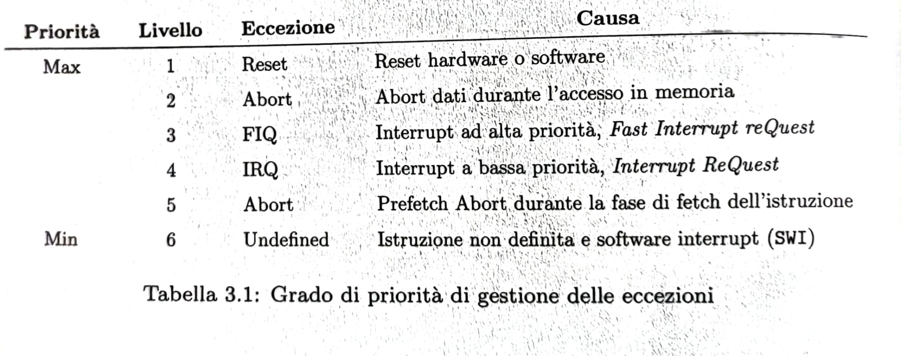
Come sono organizzati i registri dell’architettura ARM?
- 16 registri utilizzabili vanno da R0 a R15
- un registro che serve per gli stati dei programmi CPSR(Current Program Status Register)
- 20 registri non accessibili
REGISTRI
Ogni registro dei 16 che possiamo usare hanno una funzione di base
- Da a sono per uso generale
- (SP): è un registro che viene spesso usato per tenere l’indirizzo dello stack presente in memoria
- (LR): Link Register è un registro dove viene salvato l’indirizzo precedente all’inizio di una determinata procedura così da poterci tornare indietro una volta finita
- (PC):Program Counter, è quel registro che salva l’indirizzo di memoria dell’istruzione successiva a quella attuale
cosa è lo stack?
lo stack è una struttura dati usata spesso per tenere in registro le chiamate a funzione e l’allocazione dinamica
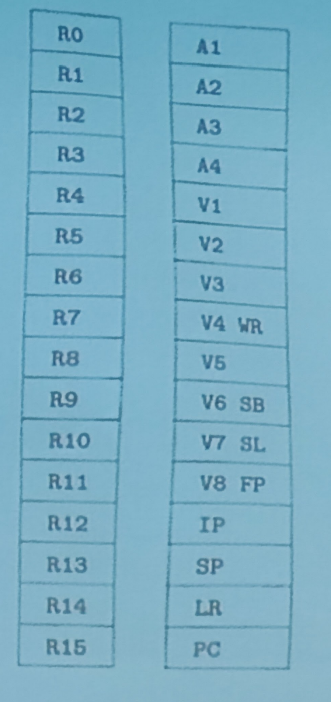
Registro CPSR
Current Program Status Register Memorizza lo stato del processore inclusi vari flag e bit di controllo è composto da 32 bit divisi in 3 tipologie
- bit di modalità(quelle viste prima FIQ, IRQ…)
- bit di controllo
- bit di flag, contengono le varie operazioni tra flag ecc… Flag di stato(esprimono delle condizioni aritmetiche di un confronto):
- N: Negativo
- Z: Zero
- C: Riporto
- V: Overflow 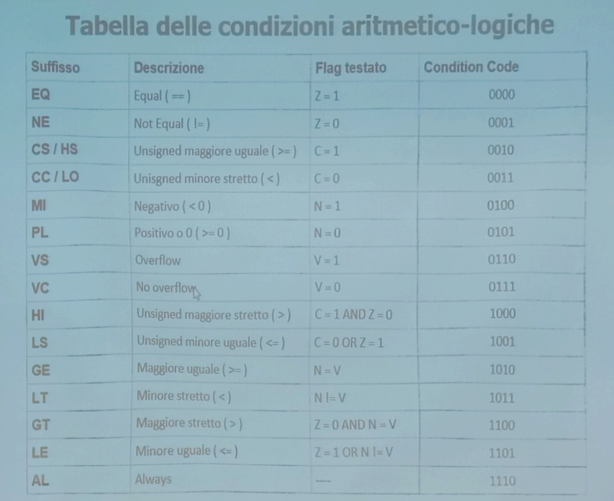 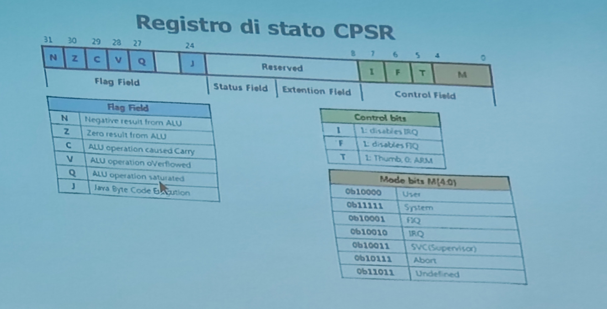 Ogni modalità ha dei registri disponibili ecco la foto: 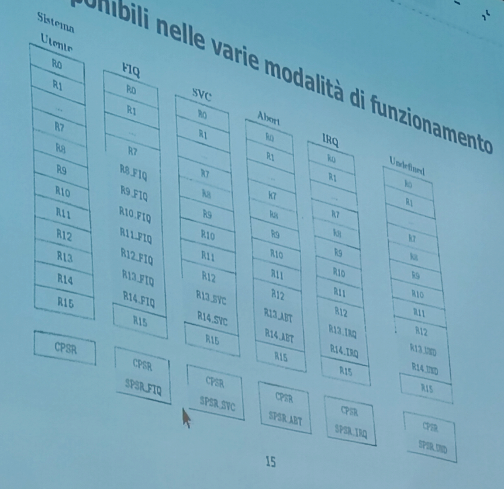
Pre-condizioni
Le condizioni sono quelle robe che determinano se una istruzione va eseguita o meno La pre-condizione serve per definire se bisogna eseguire una condizione si esprime con i valori delle flag del registro CPSR(quello di prima)
chatgptoso esempio
Un’istruzione con una condizione “EQ” (equal) sarà eseguita solo se il flag Zero (Z) nel CPSR è impostato, indicando che il risultato dell’ultima operazione era zero. Questo permette di creare codice molto efficiente che utilizza meno salti e branch.
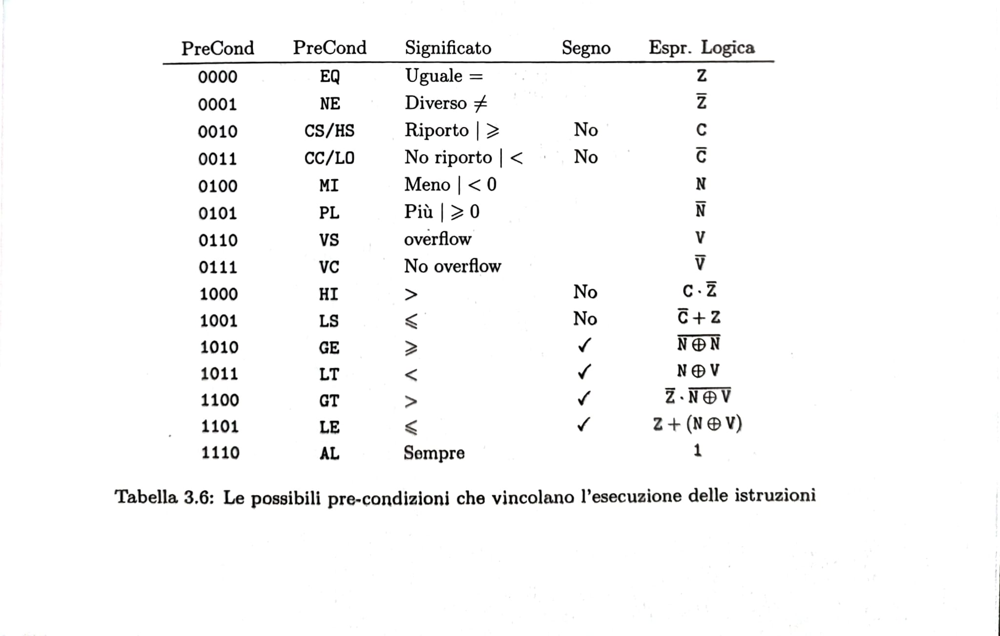
Architettura interna del processore
L’organizzazione interna dell’ARM prevede l’utilizzo di 3 registri:
- Rd: il registro destinazione dove viene salvato il risultato di una operazione
- due registri sorgente:
- Rn: registro sorgente che contiene il primo operando utilizzato nella ALU
- Rm: registro sorgente che contiene il secondo operando eseguito dopo il passaggio nel barrel shifter 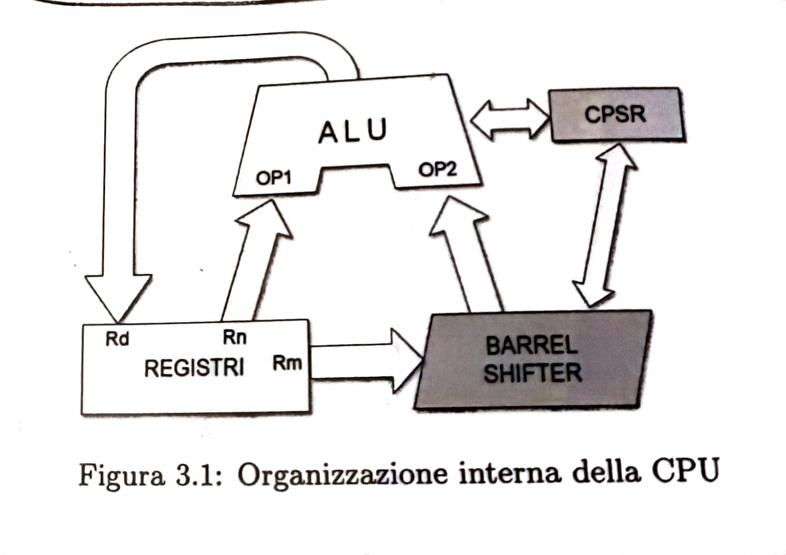
Cosa è un barrel shifter?
È un circuito digitale che esegue uno shift di bit in un solo ciclo di clock, si realizza collegando in parallelo tanti multiplexer e può fare lo shift in diversi modi, definendo il tipo e il numero di shift:
- shift a destra
- shift a sinistra
- rotate
Tipi di dati:
le istruzioni ARM operano su diversi tipi di dati tra cui:
- Byte, 1-Byte sono 8-bit
- Half word 2-Byte, 16-bit
- Full word 4-Byte, 32 bit Attraverso questi tipi di dati il linguaggio assembly può esprimere diversi formati:
- Interi in diversi basi
- Numeri in virgola mobile
- Valori booleani
- Singoli caratteri
- Stringhe di caratteri
Modalità di indirizzamento
Ci sono 3modalità di indirizzamento per fare in modo che il processore trovi e usi i dati(operandi) per fare calcoli o compiti:
- quando il dato é dentro l’istruzione si dice indirizzamento immediato
- quando il dato è dentro un registro si dice indirizzamento a registro
- quando il dato è dentro un registro ma prima di essere usato va shiftato si dice indirizzamento a registro con shift
Oltre a quelle 3 modalità si divide in altri 5 modi
- L’indirizzamento si può anche usare in una istruzione di elaborazione dati
- puoi fare l’indirizzamento su operazioni di LOAD e STORE su word o byte senza segno
- puoi fare un indirizzamento su LOAD e STORE trattando word double-word o byte
- Puoi fare l’indirizzamento su LOAD e STORE multiple
- Puoi fare un indirizzamento su LOAD e STORE con uso di coprocessori
Registro e offset
tutte le istruzioni che usano Load e Store hanno bisogno di un registro base e il suo offset che è come se fosse l’indice del registro ci sono diverse operazioni che possiamo fare con l’offset per muoversi nel registro ad esempio:
- l’offset è immediato ed è un valore senza segno specificato nell’istruzione(tipo r0+#0)
- l’offset a registro è quando il valore dell’offset è dentro un registro e può essere incrementato o decrementato
- un offset a registro scalato: quando l’offset ha un valore che viene calcolato di ogni tot attraverso uno shift( tipo r0*4)
Modalità di indicizzazione
l’indicizzazione ti permette di calcolare indirizzi di memoria per raggiungerli durante l’accesso a dati, istruzioni ecc… fondamentalmente è il modo in cui il registro viene messo in base al registro di base ci sono due modalità di indicizzazione:
- pre-indicizzata: sappiamo già dove andare, quindi sappiamo già la cella, quindi facciamo registro base+ cella che già sappiamo, e che ci porta direttamente lì
- post-indicizzato: prima accediamo alla memoria poi il dato viene sommato con l’offset così ottenendo l’indirizzo finale, quindi scorrendo tutto il registro
Quindi abbiamo la possilità di combinarli i metodi(modi+registro e offset+indicizzazione) non tutte le funzioni sfruttano queste combinazioni
Esempi di indirizzamento
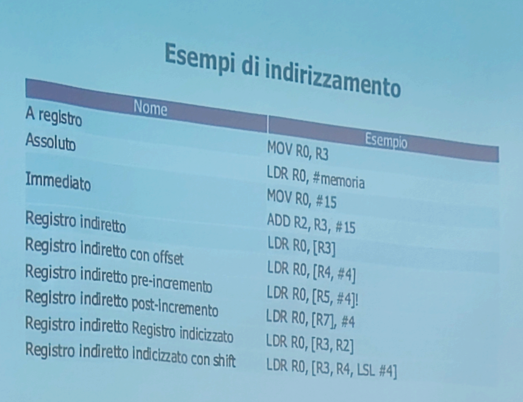
Tipo di istruzioni
Ci sono diverse istruzioni ARM e si dividono nelle seguenti tipologie:
- Elaborazione e trasferimento dati
- Diramazione del flusso o di branch: variazione nel flusso di un programma
- Accesso in memoria
- Cambiamento di stato
- Verso i coprocessori
- Per generare eccezioni
- Per generare dati Pseudo istruzioni
Istruzioni di Elaborazione e trasferimento dati
-
Aritmetiche e logiche
-
Aritmetiche con saturazione
-
confronto
-
SIMD(Single Instruction Multiple Data)
-
Selezione dei byte
-
Moltiplicazione
-
Trasferimento dati
Aritmetiche e logiche
operano su due operandi e il primo è sempre un registro il secondo o un valore o un registro o un registro con barrell shifter sono istruzioni che possono aggiornare i flag del registro di stato e sono roba tipo or ecc…
sintassi di queste cose:
<MNEM>{<PreCond>}{<S>} <Rd>, <Rn>, OP2- MNEM: il nome della specifica istruzione
- PreCond: è opzionale, indica l’esecuzione dell’istruzione se verificata(condizione)
- S: opzionale, forza la scrittura nel registro di stato(CPSR), delle informazioni dell’operazione compresi cambiamenti del flag di stato
- Rd: destinazione quindi tipo quello prima dell’uguale
- Rn: sorgente del primo operando
- OP2: secondo operando, può essere valore, registro o registro shiftato
Ogni istruzione è una parola a 32 bit e ha un suo OPCODE 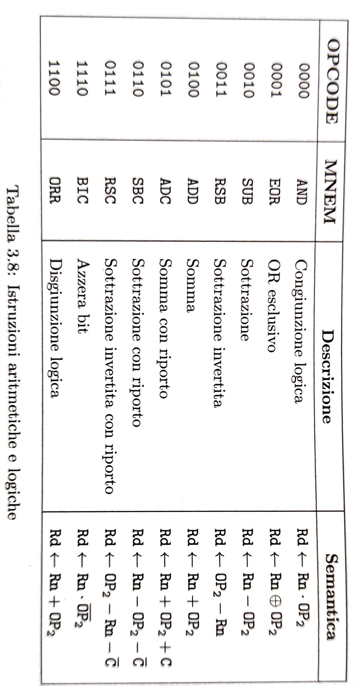 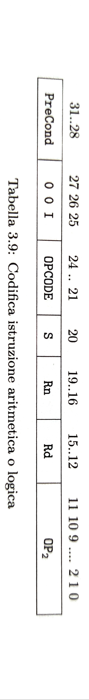
- il bit 25 indica se c’è o meno uno shift
Indirizzamento immediato
Un problema dell’indirizzamento immediato è che tu hai solo 12 bit(quelli su OP2) per rappresentare la word ovvero l’istruzione completa(32 bit) per risolvere questa cosa i progettisti hanno diviso i 12 bit in 4 di posizione e 8 di valore vedendo la tabella si puo’ notare un esempio la posizione rappresenta il numero di shift di 2 bit i valori rappresentano quei bit in binario che una volta sistemati rappresentano l’indirizzo immediato voluto es:
- valori
- posizioni 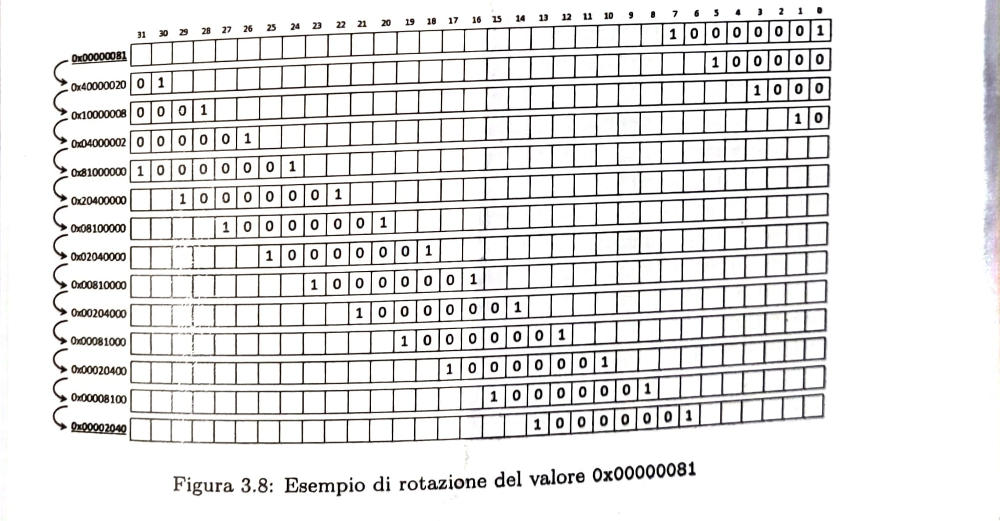 otterremo quindi un indirizzo a 32 bit ovvero 0x00002040
A volte gli indirizzamenti portano a errori
ad esempio se noi proviamo a fare una
MOV R0,#0xFFFFFFFFl’assembler non riuscirà a fare l’operazione MOV perché può spostare al massimo 8 bit e con tutte quelle F ne abbiamo di più quindi il programmatore deve inventarsi dei trucchi per aggirare il problema quali sono:
- fare
NOT #0x0000000 - spostarsi piano piano l’indirizzo ad esempio:
- con
0X55550000te li sposti piano piano usando or e traslazioni - 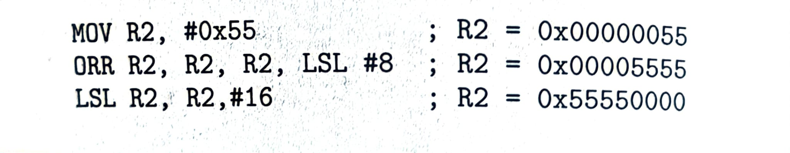
- con
Istruzioni aritmetiche con saturazione
Il linguaggio ARM prevede che i numeri vadano fino a per le cose positive e per i negativi Se si fanno operazioni di diverso tipo si potrebbe incorrere in overflow o underflow sforando il numero potrebbe rappresentare qualcosa di sbagliato
Soluzione:
I progettisti hanno definito un dominio che è limitato, se il numero supera quel determinato limite rappresentabile viene asserito un flag Q nel registro di stato CPSR e quel numero non cicla, ovvero non torna dal punto di inizio, ma satura.
le istruzioni aritmetiche di saturazione
<MNEM>{<PreCond>} <Rd>, <Rm>, <Rn>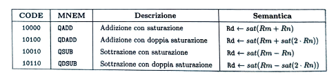
Istruzioni di confronto
Le istruzioni di confronto hanno in ingresso due operandi ma non un registrazione poiché il loro effetto è nel registro di stato in base al flag del risultato
<MNEM>{<PreCond>}<Rn>,Op2
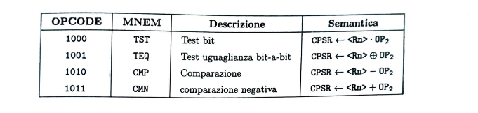
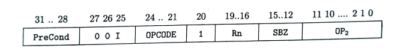
cosa fanno CMP, TEQ, CMN e TST?
- CMP: fa la comparazione e si comporta come SUB quindi fa la sottrazione per fare un confronto(se esce il numero negativo o positivo) 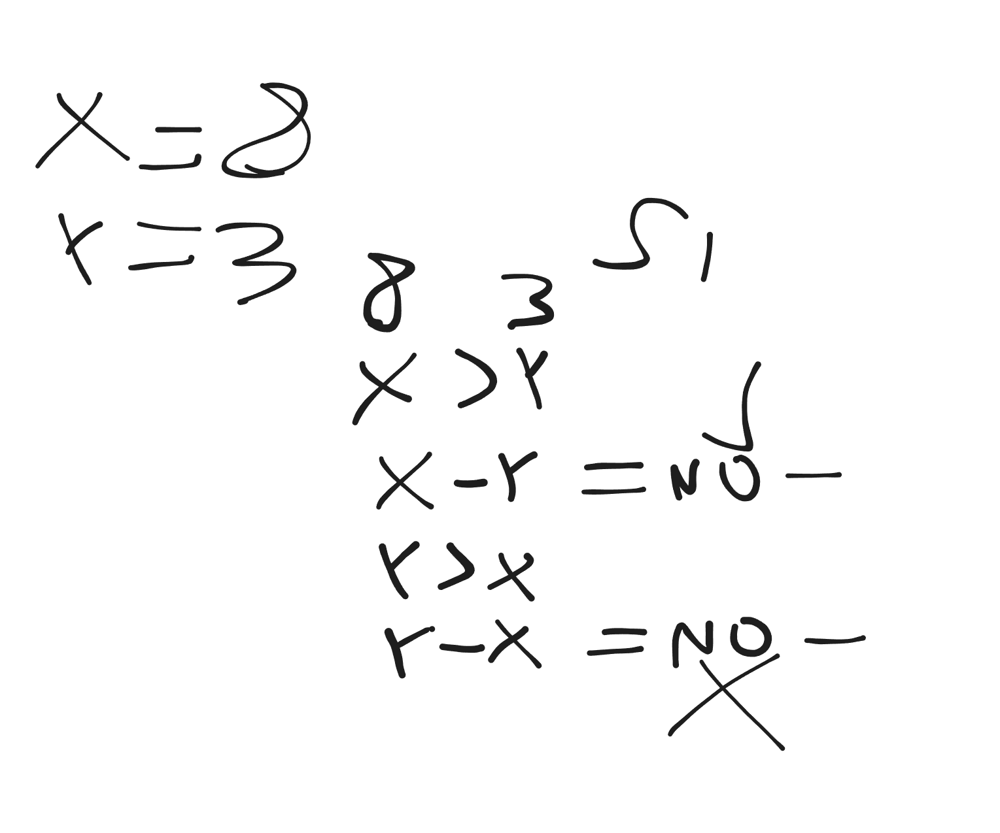
- TEQ: test di uguaglianza bit a bit e si comporta come un EOR XOR
- CMN: comparazione negativa e funziona come l’ADD
- TST: test bit e funziona come l’and
Istruzioni SIMD(Single Instruction Multiple Data)
Sono delle istruzioni che operano su dati multipli come se fossero una sorta di Array. Un esempio di una singola istruzione è la somma tra due array.
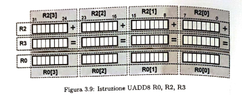
Come e fatta una istruzione SIMD
<MNEM>{<PreCond>} <Rd>, <Rn>, <Rm>
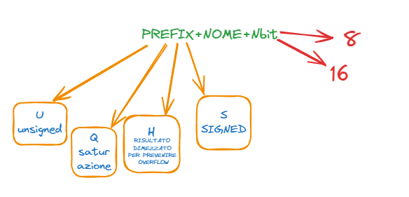
Differenza tra array di byte e array di halfword
- array di byte sono quegli array dove ogni elemento è composto da 8 bit ovvero 1 byte le istruzioni che ci si possono fare sono queste 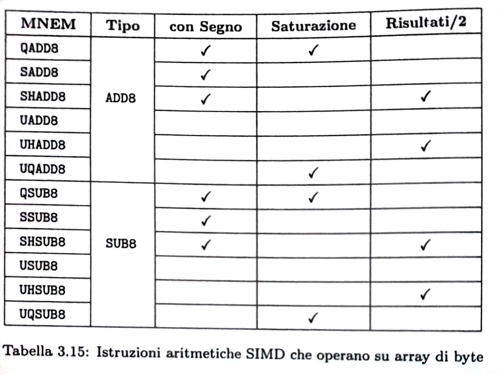
- array di halfword sono quegli array dove ogni elemento compone metà parola ovvero 16 bit
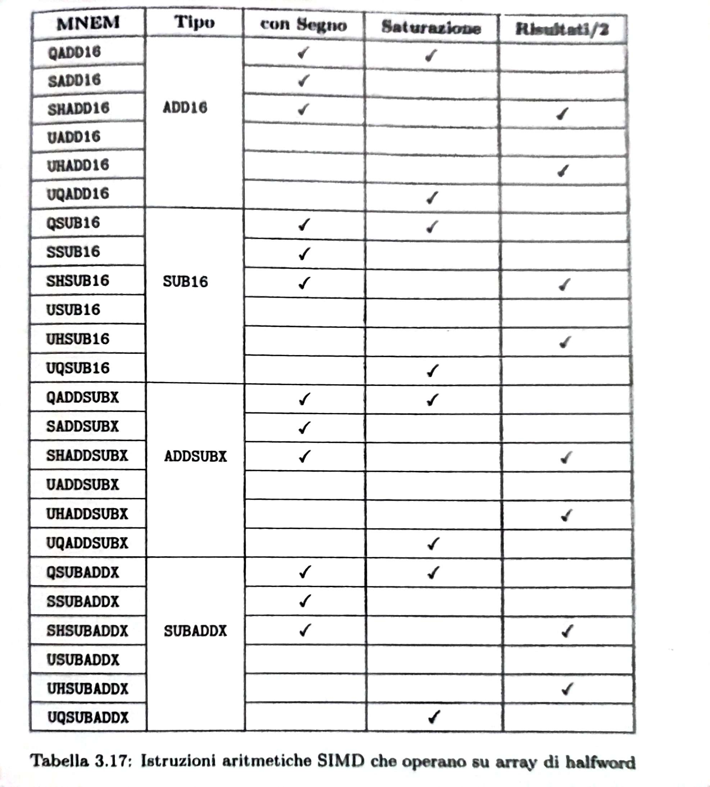
I flag GE(Greater than or Equal) >=
Queste flag presenti nel registro CPSR Tengono conto dell’esito del confronto dei singoli byte o delle singole half word di un registro di dati(array) l’esisto di un confronto puo’ essere Top o Bottom
Istruzione di Selezione di Byte
Si chiama select e analizza i flag di confronto del GE e decide quale byte copiare nel registro di destinazione
SEL{<PreCond>}<Rd>,<Rn>,<Rm>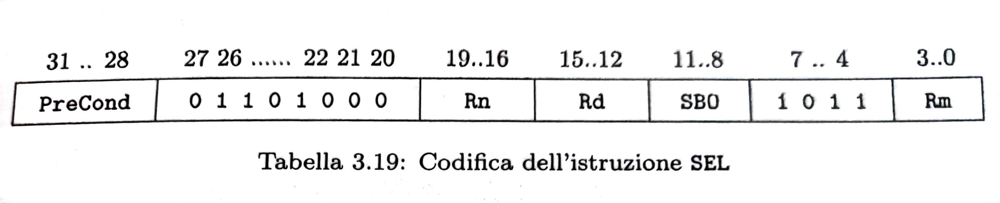 da 8 a 11 SBO(Should Be One) i bit della codifica
Istruzioni di moltiplicazione
permettono di fare moltiplicazioni o somme su halfword e word e devi avere minimo 2 registri e massimo 3 come operandi, con o senza segno e ritornano o una word o una double word
<MNEM>{<PreCond>}{<S>}<Rd>,<Rn>,<Rm>la tabella sotto è a 2 operandi 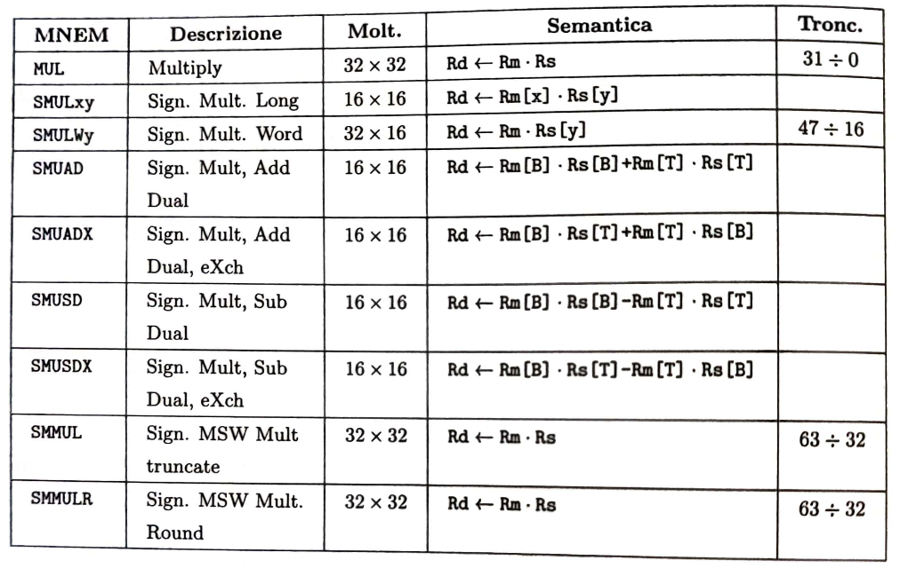
-
a 3 operandi 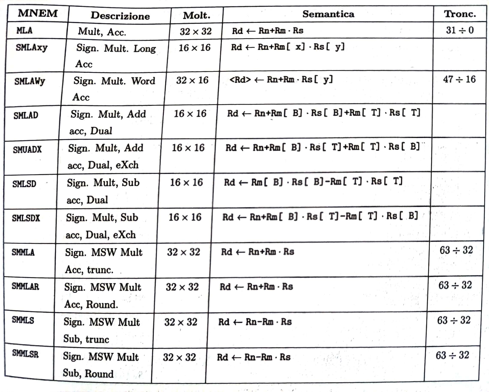
-
double word 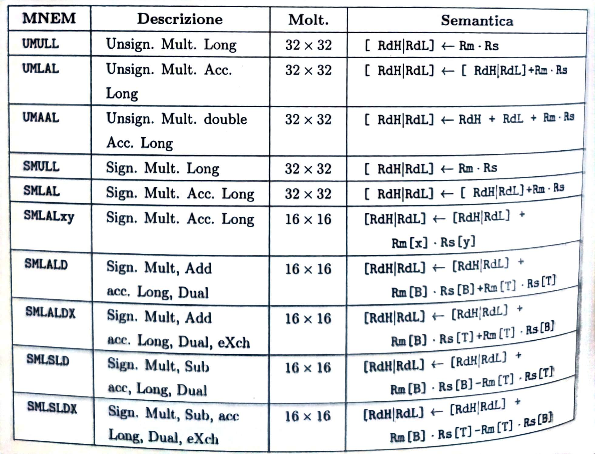
Istruzioni di trasferimento dati
Sono istruzioni che svolgono il compito di trasferire dati(registri, numeri, ecc…)
<MNEM>{<PreCond>}{<S>}<Rd>,<OP2>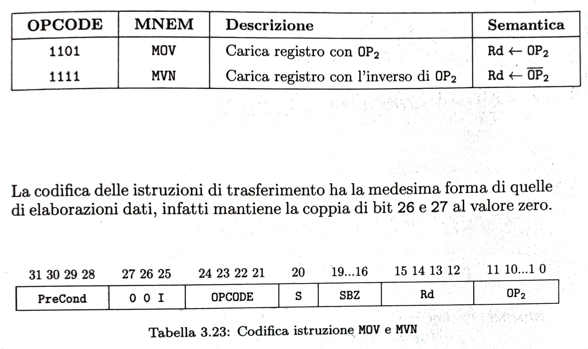
Istruzioni di accesso ai registri di stato
si dividono in
-
MRS(Move to Register from Status register): copia il valore del CPSR, o del SPSR, all’interno dei registri di uso generale.
MRS {<PreCond>} <Rd>, {CPSR|SPSR} -
MSR (Move to Status register from Register): copia il contenuto di un registro o una costante in una o più ambiti del registro CPSR o SPSR Vari tipi di ambiti: c = controllo x = estensione s = stato f = flag
MRS {<PreCond>} {CPSR|SPSR}{_<ambiti>}, <Rm> MRS {<PreCond>} {CPSR|SPSR}{_<ambiti>}, #<valore>
Esempio di istruzione ai registri di stato
MRS R0, CPSR // R0 = CPSR (lettura stato) BIC R0, R0, #Ox1F // Ripulisce mode bit ORR R0, R0, #0X13 // Imposta modo Supervisor MSR CPSR_c, R0 // CPSR = R0 (scrittura stato)Nel caso si debba modificare esclusivamente un certo ambito del registro di stato (es. flag), si può restringere l’applicazione dell’istruzione utilizzando la sintassi
MSR CPSR_F, 0xF0000000
Istruzioni di branch
servono per saltare da una istruzione all’altra sfruttando i tag(arrivano fino a 32 MB)
vediESERCIZI ARM
<MNEM>{<PreCond>}<Operando
si può scrivere come:
- B(Branch): carica nel PC(R15) l’istruzione da noi desiderata
- BL(Branch with Link): oltre a fare un normale branch carica l’indirizzo di ritorno dell’istruzione su LR(R14)(registro di chiamata a funzione) 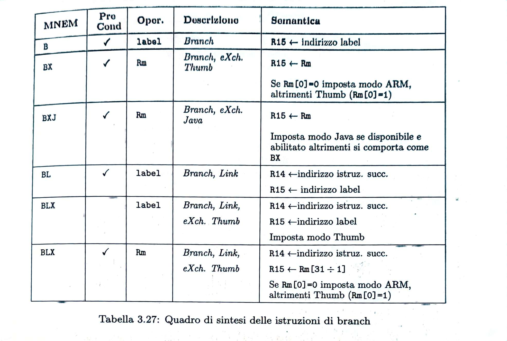 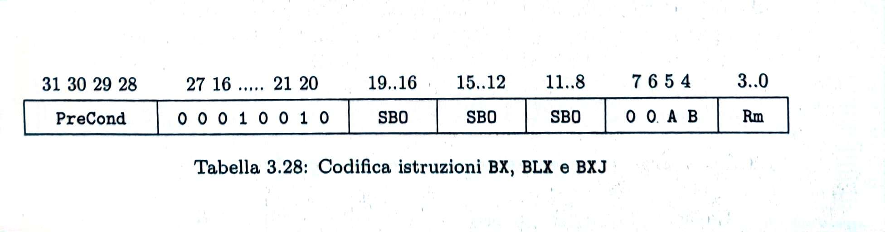
Istruzioni LOAD/STORE
Sono le uniche istruzioni che permettono di accede alla memoria si dividono in 2 istruzioni
- LDR(Load Register):
- STR(Store Register):
<MNEM>{<PreCond>}{B}{T}<Rd>,<Indirizzamento> - B:quando viene usato Garantisce che solo un byte venga letto o scritto, viene usato per operazioni su stringhe che sono estremamente precise
- T: viene usato per fare operazioni di LOAD e STORE in user mode, può essere usato quando si devono gestire troppi ruoli e così forzi le operazioni di LOAD e STORE in modalità user Le operazioni di load e store prevedono un loro suffisso che ne specifica il tipo di dato
| SUFFISSO | DESCRIZIONE |
|---|---|
| B | Byte senza segno |
| SB | Byte con segno |
| H | Halfword senza segno |
| SH | Halfword con segno |
| non indicato | Word |
| Load e Store possono spostare anche più registri insieme con diverse modalità | |
| 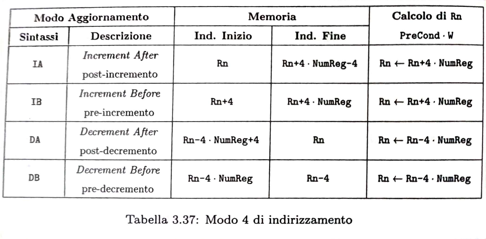 |
SRS(Store Return State)
Salva lo stato di ritorno da inviare al RFE che avrà il compito di inviare questo stato al PC e al CPSR se si verifica una eccezione
Return from Exception
La RFE permette di caricare la coppia di registri PC e CPSR ad un punto di ripristino se si verifica una eccezione(errore)